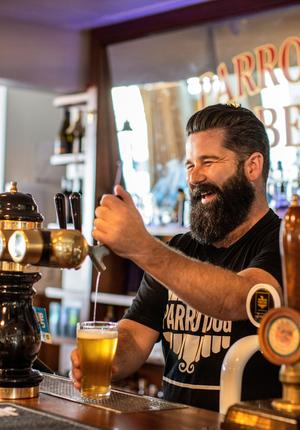

Situated at the southern end of the North Island and nestled between green hills and a sparkling harbour, Wellington, New Zealand, is a little city with a big heart.
Surrounded by nature and fuelled by creative energy, Wellington is a compact city with a powerful mix of culture, history, nature and cuisine.
Wander through hidden laneways to discover street art and follow the sculpture walks along Wellington's waterfront. Discover the stories of Aotearoa New Zealand in world-class museums and galleries – the interactive and immersive national museum, Te Papa(opens in new window), is a must-visit. Ride the iconic Wellington Cable Car for amazing views of the city while you enjoy an ice cream at the top.
Immerse yourself in nature and explore by bike, foot, kayak, or ferry. Relax at Oriental Bay, Wellington's golden-sand inner-city beach, before walking the Southern Walkway trail to Wellington's rugged south coast. Venture north to explore the Remutaka Cycle Trail, one of New Zealand’s Great Rides, or the Escarpment Track, where you can experience spectacular views of the Kāpiti Coast as you scale steep steps, ridgelines, and swing bridges.

A must for any fan of The Lord of the Rings is visiting the gateway to Academy Award®-winning Wētā Workshop, Wētā Cave. Here you’ll find authentic collectibles, replicas, prints, movie memorabilia, and more. Join a guided tour for a behind-the-scenes look at props, costumes, miniatures and model making.
Wellington s reputation as New Zealand s culinary capital is well-deserved: it has more eateries and bars per capita than New York City. Wellington is famous for its tucked-away bars, café culture, award-winning restaurants and bars, and great coffee. Head to Courtenay Place or Cuba Street to get amongst the good stuff.
Located in the heart of the Classic New Zealand Wine Trail - a journey through regions that cover more than 80% of New Zealand’s wine production - Wellington is a great place to start your wine-tasting journey. Marlborough, Wairarapa and Hawkes' Bay are all a few hours' drive or ferry-ride away from Wellington and offer unforgettable food and wine experiences.
If you want to visit the South Island, Wellington is the city is the place to board the inter-island ferry with or without a car.
This three-and-a-half-hour ferry ride is one of the most spectacular ferry crossings in the world.
Bluebridge(opens in new window) and the Interislander(opens in new window) both run regular daily services between the North and South Islands. For those looking for a little extra, Bluebridge offers an overnight sleeper service, and Interislander has a Premium Lounge available onboard.
The crossing takes passengers through the Cook Strait, past the magnificent scenery of the Marlborough Sounds, before berthing in the picturesque town of Picton at the top of the South Island - the journey also runs from Picton to Wellington.